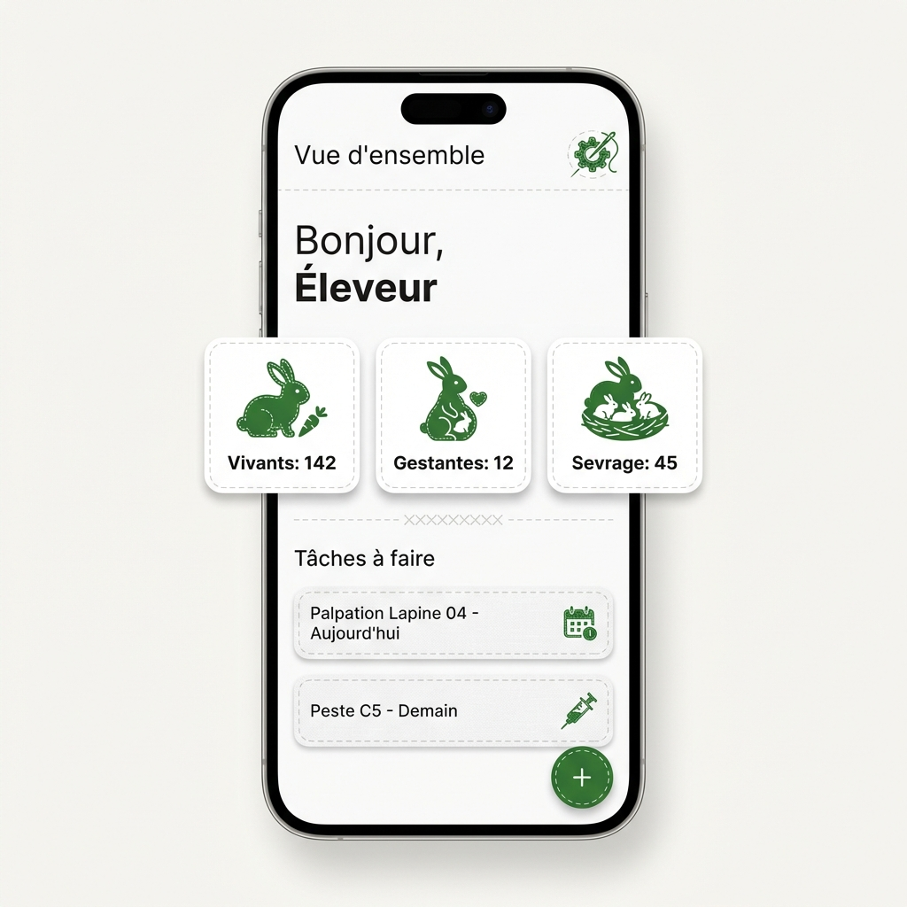
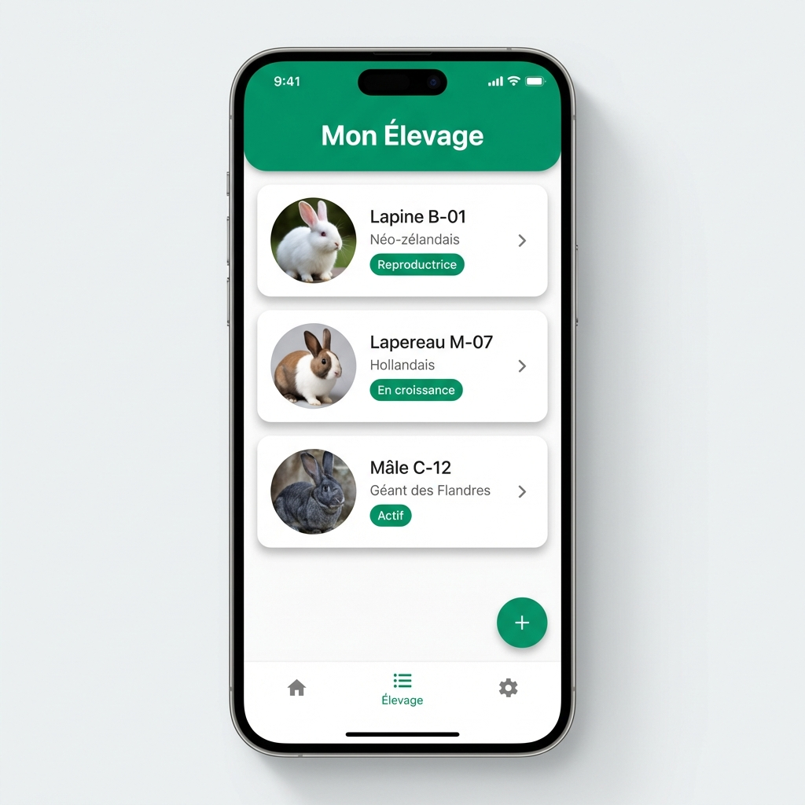
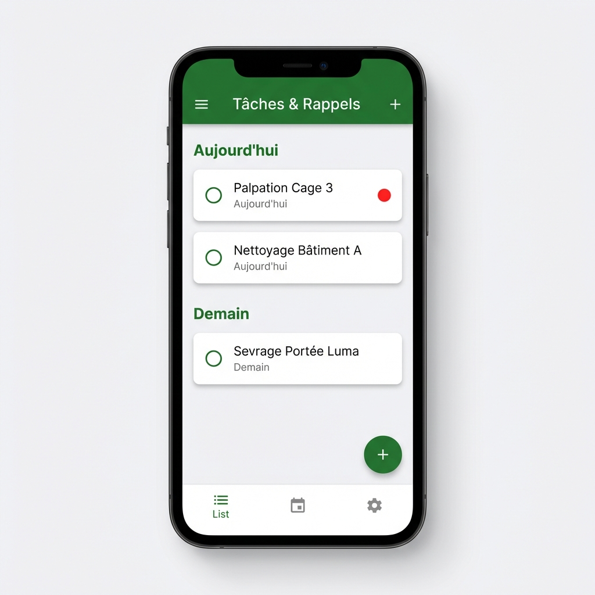
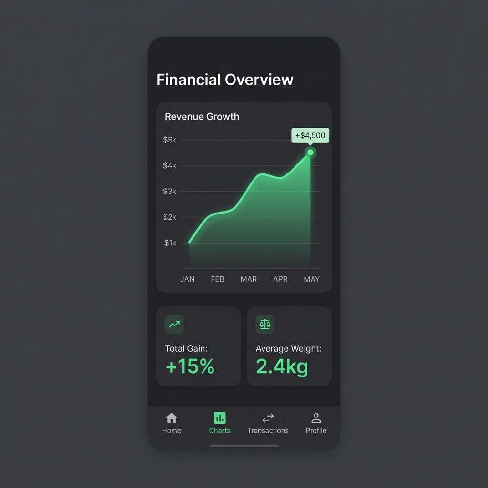

L'application tout-en-un pour les éleveurs professionnels et amateurs. Suivez la reproduction, la santé et les finances de votre cheptel, même sans internet.

Une expérience utilisateur fluide et intuitive, conçue pour vous faire gagner du temps sur le terrain.



Une suite complète d'outils conçus spécifiquement pour la cuniculture moderne.
Fiches détaillées pour chaque lapin : généalogie sur 4 générations, poids, photos et historique complet.
Planifiez les accouplements, calculez automatiquement les dates de mise bas et suivez chaque portée.
Carnet de santé numérique, rappels de vaccinations et suivi des traitements pour un élevage sain.
Analysez la rentabilité de votre élevage avec des graphiques clairs et des rapports détaillés.
Travaillez n'importe où sans internet. Vos données sont synchronisées dès que vous êtes connecté.
Ne manquez plus aucune tâche importante grâce aux notifications intelligentes et personnalisables.
En 3 étapes simples, prenez le contrôle total de votre élevage.
Installez Rabbit Farm gratuitement depuis le Google Play Store.
Créez les fiches de votre cheptel avec photos, parents et informations clés.
Recevez des rappels automatiques et suivez vos performances en temps réel.
Découvrez pourquoi des centaines d'éleveurs font confiance à Rabbit Farm App.
"Avant, je notais tout sur des carnets. Maintenant, tout est organisé dans mon téléphone. Un gain de temps incroyable !"
"Le mode hors-ligne est parfait pour moi en zone rurale. L'application fonctionne même sans réseau mobile."
"Grâce à la vue financière, j'ai pu identifier mes meilleurs reproducteurs et optimiser ma rentabilité."
Tout ce que vous devez savoir avant de commencer.
Oui, Rabbit Farm App est entièrement gratuite à télécharger et à utiliser. Toutes les fonctionnalités principales sont accessibles sans abonnement.
Absolument. Vos données sont stockées localement sur votre appareil et chiffrées. La synchronisation cloud optionnelle utilise des protocoles sécurisés.
Oui ! L'application fonctionne à 100% hors-ligne. Toutes les fonctionnalités sont disponibles sans connexion internet.
Actuellement, Rabbit Farm App est disponible uniquement sur Android (version 7.0+). Une version iOS est prévue pour 2027.
Vous pouvez exporter vos données en PDF, CSV ou Excel depuis les Paramètres. Les sauvegardes complètes sont également possibles.
Rejoignez des centaines d'éleveurs qui ont déjà fait le choix de la simplicité et de l'efficacité.
Télécharger sur Google PlayCompatible Android 7.0+ • Gratuit • Sans publicité